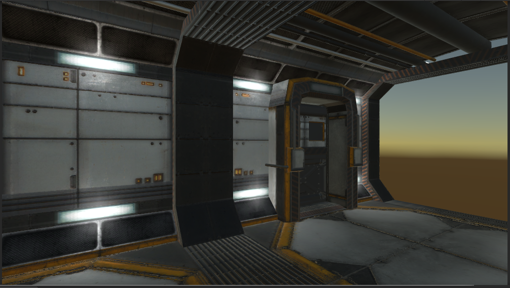

Sci-Fi Modular Rooms
Lets you easily create Sci-Fi scenes using prefab rooms and corridors, with a helpful selection and snapping system.
Overview
 Giving you nearly endless layout options
Giving you nearly endless layout options
Download
Create First Rooms
 You could just drop in any of the room or corridor prefabs on to this object,Or you can just click on the 0. Add Starting Corridor optionThis will add the basic starting corridor,
You could just drop in any of the room or corridor prefabs on to this object,Or you can just click on the 0. Add Starting Corridor optionThis will add the basic starting corridor,

 NOTE: You may need to move or rotate the new room/corridor to make it snap in place
NOTE: You may need to move or rotate the new room/corridor to make it snap in placeWhen you select a room it will show you what options you have to add to the next room.It will also show where a room is already connectedThis also shows the different connection types - 'Door' and 'corridor'Now you can continue to add as many rooms and corridors as you like.Once you have an area you wish to testre-select the Map_pf gameObject

2. Randomize All Fillers Some rooms have extra random details
3. Add Missing Doors & Effects To add the Door at the points of the links
4. Generate Lighting Generate lighting for the rooms
1 - 4 Do all Handy do all the above in one step
This is to just make things easier to find if you have a map with different levels
 2. Randomize All Fillers Will add extra random details to some rooms (see more later)
2. Randomize All Fillers Will add extra random details to some rooms (see more later)3. Add Missing Doors & Effects Will add the doors to the map
NOTE: Scene need to be set to use light map/baking - see Setting up Lighting sectionAll lights in prefabs are set up as Baked.After Bakeit's much faster as the lighting is fully backed in.Overview on using the Sci-Fi Modular Rooms
Player set up
TempPlayer_pf This needs to be under map_pf object.(This is just a camera, no player control)
both can be found in Assets\eWolf\SciFi_Rooms_System\Prefabs\ folderOnce both are added, You can run the gameWhen you move the player object towards the door it will openAnd the room behind the door will unhide, but for the door opensIf you move more into the room, the door will close and hide the rooms behind it.This also works for more then one playerEach player will keep the room active.This also works for other things like CCTV.Just make sure your object has the RoomInteractor Script to keep the room active.RoomInteractor also has the option to open doors, turn this off and RoomInteractor will not open the door, but still keep the room active.
Connection Types
R01_Corridor Corridor connection (No door)
R01_Window Window connection - places window on connection
R01_CorridorBlastDoor Blast door Corridor connection - places Blast door on connection
Rooms links will only allow you to add a room/corridor with the same connection type.
Fake Doors Are added when the door leads nowhere.
They can't open and have no green light

Doors
Door Action Range Is how close you need to be to action the door.
Only Fake, and AutoOpen work, the rest of the options are for your ImplementationYou can override the default doors actions, by setting Action<Door> DoorOpenLogicIf DoorOpenLogic is set it will get called instead of the normal door code.
Lighting
Randomize All Fillers
 Clicking on the 2. Randomize All Fillers Will randomize the fillers on the walls.Sometimes you will need to keep some walls clear.You can easily just turn off the wall fillers.Disabled the option will stop the wall filers from appearing
Clicking on the 2. Randomize All Fillers Will randomize the fillers on the walls.Sometimes you will need to keep some walls clear.You can easily just turn off the wall fillers.Disabled the option will stop the wall filers from appearingExtra Room Objects
Adding your own Rooms
Import Visibility
Import Cameras
Import Lights
 And tick the Generate Light UVs (As you this is needed for the light baking)And finally, On the Materials Tab and select None on the Material Creation Mode.Next, We need to create the prefab, (sometimes it's quicker to copy an existing prefab.)
And tick the Generate Light UVs (As you this is needed for the light baking)And finally, On the Materials Tab and select None on the Material Creation Mode.Next, We need to create the prefab, (sometimes it's quicker to copy an existing prefab.)Art This holds the mesh for the room.
Links All the Connection links to other rooms
RoomIDCollision Box collider that outlines the room.
Lights All the lights for the room
Collision The full mesh collider
RoomObjects Are for any extra objects you want to add to the room.
Effects For extra effects, Light Flare is added here.
Adding your own Wall Fillers
Project layout
Version 2
 NOTE: This is not a working door - just a nice way to end a corridor.Lift (This is a full working door)
NOTE: This is not a working door - just a nice way to end a corridor.Lift (This is a full working door)


Version 2.1

Version 2.2
You may also like

Sci-Fi Objects Pack 1
Collection of game ready objects you can just use in any sci-fi style game
Shelves are placed into the map empty, Then by clicking on the Fill All Shelves Button will populate all the shelves.The prefab ObjectsOnFloor_pf will let you place lots of random objects on the floor quickly.

Sci-Fi Objects Pack 2
Collection of game ready objects you can just use in any sci-fi style game.Contains: Cargo, Debris, Desks, Equipment, Living Quarters, Bed, Chairs, Lockers, Scenery, Screens, etc.

Skyboxes Nebulas
Section of 5 Variety skyboxes all Space Nebulas, High quality panoramic scenes that can be used in your game.All textures (6 of them) are 1024 by 1024 resolution.